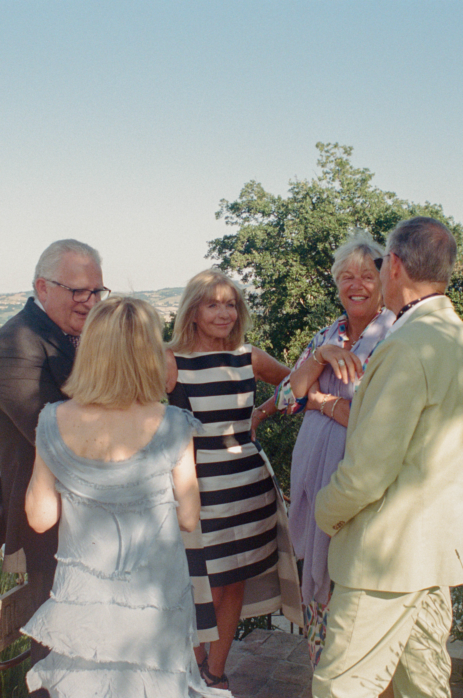
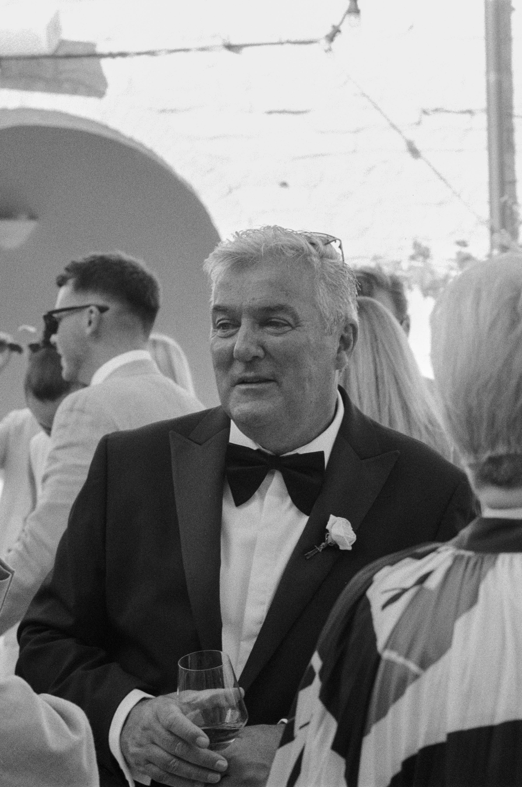
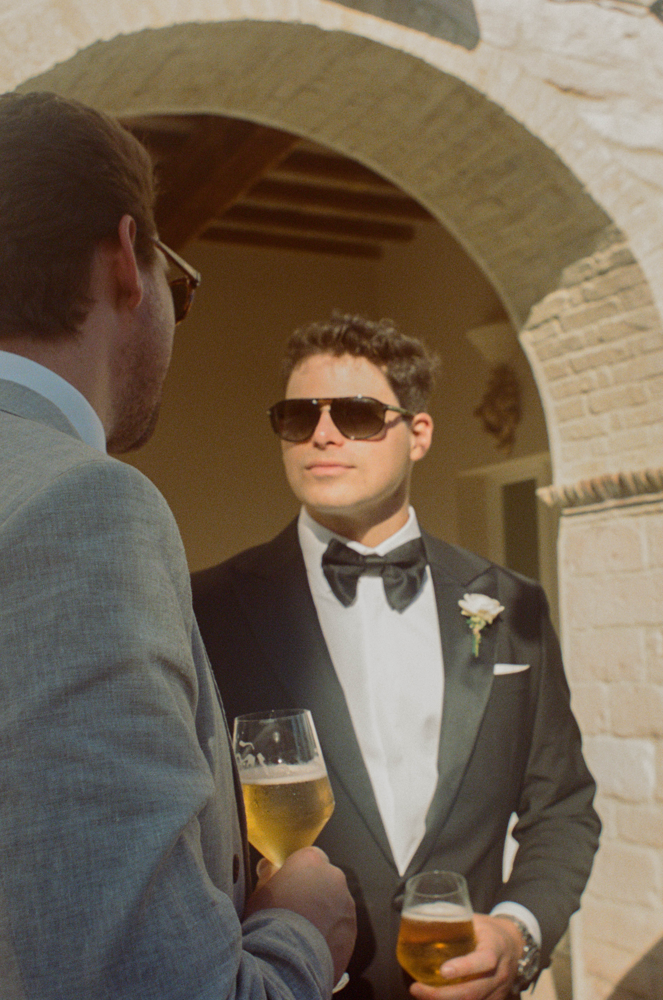
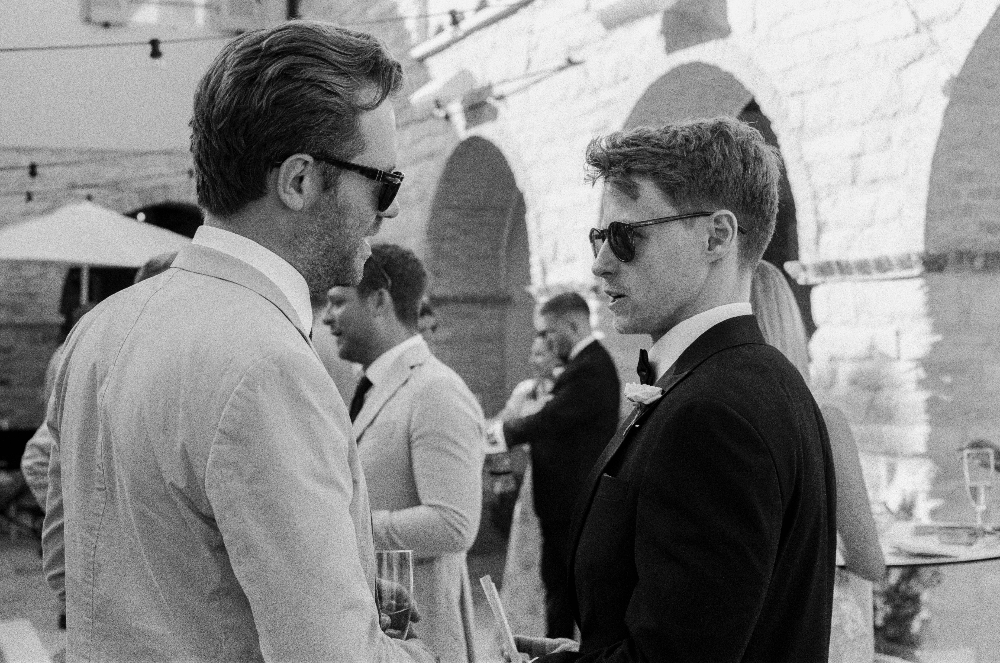

Operating strictly as a dedicated second shooter, my focus remains entirely on capturing unscripted moments among guests, fleeting ambient interactions, and quiet venue details while your primary photographer conducts formal family configurations. Shot selectively on fine-grain 35mm film formats and premium digital files to preserve an authentic, natural atmosphere.



